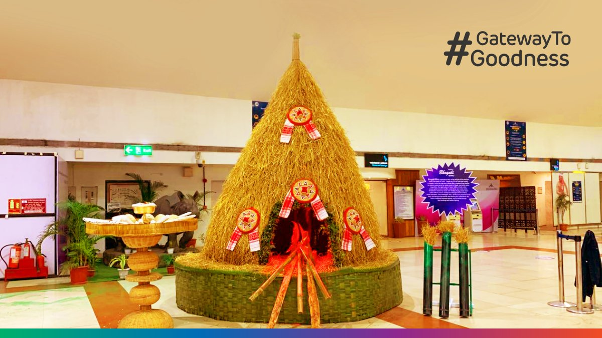
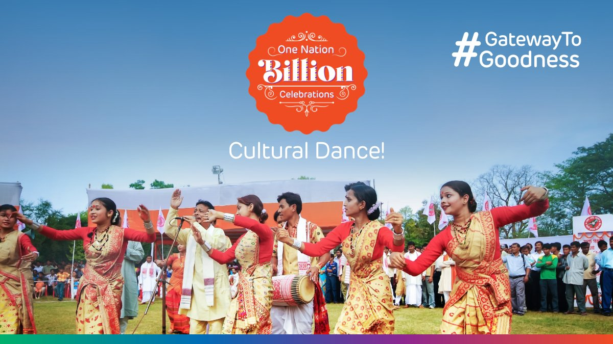

Adani Group tookover 9 Indian airports with the ambition being to build futuristic airports, cultivate vibrant aerotropolis ecosystems (hotels, retail, and entertainment destinations). Only one of the nine had visibilty on digital channels for travelers and visitors alike.
Rather than building another conventional transactional hub, the ambition was clear: craft an Indian counterpart to Singapore's Changi—a destination where people visit not just to catch flights, but to experience culture and leisure.
1. Perception Shift: Transition consumer sentiment around regional airports from cold, utilitarian check-in bottlenecks into warm cultural destinations.
2. Dwell Time & Spend: Drive high-margin non-aeronautical revenues (retail, dining, duty-free) by giving passengers a compelling reason to arrive hours earlier or linger after landing across Tier 2 and Tier 3 cities.
3. Removing Friction: Alleviate first-time traveler anxiety with an empathetic, celebratory narrative framework that felt celebratory rather than daunting.
The opportunity was to identify a single umbrella idea that united diverse ethnicities without generic corporate blandness. The realization was simple: India is one nation celebrating a billion different ways simultaneously.
We reframed the airport from “a place you pass through” to “the starting point of regional pride.” By integrating living grassroots heritage on the terminal floor with digital storytelling, routine transit was transformed into emotional, shareable memory.




Instead of treating the airport as passive physical infrastructure that required conventional advertising, we treated terminal floors as our primary broadcast medium:
1. Living Heritage Workshops: Instead of static signage, departure lounges hosted live workshops—Warli painting, Mata ni Pachedi, Khavda Pottery, Kaavi Art, and Mandala—offering passengers an interactive immersion into local craftsmanship.
2. The 7-Airport Network: Rolled out in seamless synchronization across seven national transit centers:
3. Frontline Integration: Ground staff wore themed badges and festive masks, while terminals incorporated interactive photo stations and curated regional culinary gifting.
The campaign proved that cultural empathy directly converts to commercial growth. By tying retail and food spending thresholds to raffle entries and festival gifts, average order values surged:
Digital Ecosystem Onboarding: By driving organic passenger discovery toward Adani One digital travel services, user acquisition costs dropped dramatically while establishing recurring value across flight, hotel, and duty-free bookings.
For Adani Airports, the launch of #OneNationBillionCelebrations was more than a seasonal campaign; it was a corporate capability statement.
By proving that physical, industrial transit footprints could be transformed into monetizable, digital-first lifestyle ecosystems, the strategy altered the investment narrative. At the same time, supporting regional craftspeople anchored the campaign in tangible ESG and community equity.
- Strategy & Lead Copy: Mouris Bashir
- Creative Team: Prabhjeet (Snr Copy), Akansha Rana (Copy), Simran (Lead Art), Gaurav Jhangu (Video), Shree (Design)
- Social Media Management: Sanskriti Nagar, Nisha
- Corporate Communications Leadership: Malika Dasgupta (Head - Corp Comms, AAHL)